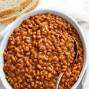
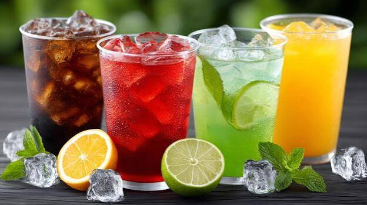
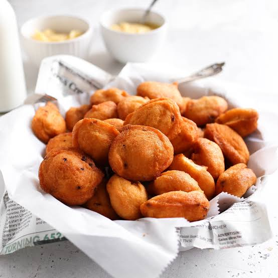

COMFORT FOOD
Beans
Hearty, comforting and full of flavour.
AUTHENTIC AFRICAN FLAVOURS
Good food. African taste. A place to enjoy traditional favourites.
OUR MENU
Fresh, satisfying and made with that familiar African taste.

Hearty, comforting and full of flavour.

cold water .
assorted types wine.

a cold soft drink.

bread served with egg.

Grilled chicken nicely served.

a very hot but nice pepper soup.

a small snack .

beans served with plantain.

white rice served with stew.

very tasty vegetable soup.

pounded yam served with the side of tasty Egusi.

a nice heart stoping gift called fried rice.

jollof rice a heart harming serves.

ofada rice served with sauce.

Eba with okra soup.

Soft yam served with tasty egg sauce.
Traditional African soups prepared with rich flavours.

A delicious steamed bean pudding made the African way.

Hearty, comforting and full of flavour.

Hearty, comforting and full of flavour.

Hearty, comforting and full of flavour.

Hearty, comforting and full of flavour.

Hearty, comforting and full of flavour.
ABOUT AFROJOINT
Afrojoint is an African restaurant focused on serving enjoyable traditional meals in a warm and welcoming setting.
CONTACT